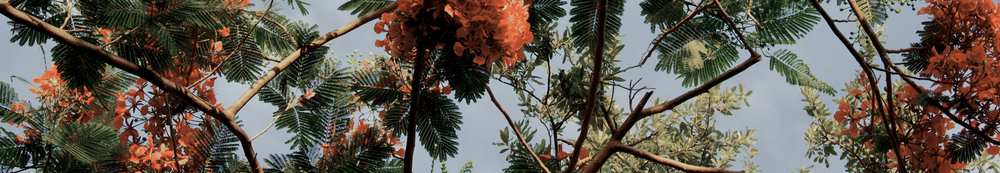
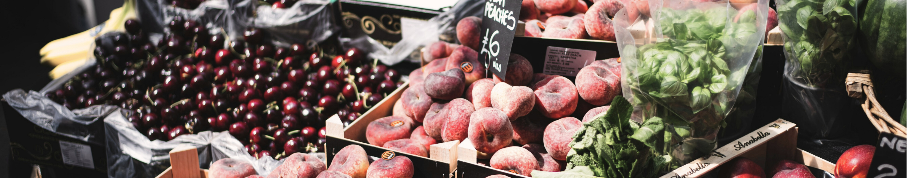

Explore the best dining options nearby:
Address: 473 Bronte Road, Bronte, NSW 2024
Walking Time: 1 minute
Description: Known for its fresh, homemade food and excellent coffee, this café offers a cozy spot with great views of the beach.
Address: 465 Bronte Road, Bronte, NSW 2024
Walking Time: 1 minute
Description: A local favorite for brunch, The Coop serves classic Australian dishes with a focus on local produce.
Address: 469 Bronte Road, Bronte, NSW 2024
Walking Time: 1 minute
Description: This Brazilian café offers a unique menu with a mix of South American flavors and traditional café fare.
Address: 477 Bronte Road, Bronte, NSW 2024
Walking Time: 2 minutes
Description: A classic beachside café experience with a variety of Australian dishes and friendly service.
Address: 481 Bronte Road, Bronte, NSW 2024
Walking Time: 2 minutes
Description: Known for its delicious burgers and casual dining atmosphere, perfect for a quick bite.
Address: 485 Bronte Road, Bronte, NSW 2024
Walking Time: 2 minutes
Description: Offers a fusion of Australian and international dishes, with a focus on fresh ingredients.
Address: 491 Bronte Road, Bronte, NSW 2024
Walking Time: 3 minutes
Description: A popular spot for fish and chips, providing a classic beachside meal.
Address: 145E Macpherson Street, Bronte, NSW 2024
Walking Time: 5 minutes
Description: A café offering a variety of Australian dishes, known for its relaxed atmosphere and good coffee.
Address: 145 Macpherson Street, Bronte, NSW 2024
Walking Time: 5 minutes
Description: Specializes in healthy bowls and smoothies, perfect for a refreshing and nutritious meals.
Address: 131 Macpherson Street, Bronte, NSW 2024
Walking Time: 6 minutes
Description: Famous for its artisanal bread and pastries, a must-visit for bakery lovers.

Discover beautiful parks and trails:
Distance from Beach: Adjacent to Bronte Beach
Size: Approximately 4 hectares
Length of Trails: Various short paths within the park
Description: Located right next to Bronte Beach, this park offers picnic areas, barbecue facilities, and a playground, making it a perfect spot for families and groups.
Distance from Beach: Starts at Bronte Beach
Length of Trail: 2.5 km (one way)
Description: This iconic coastal walk connects Bronte Beach to Bondi Beach, offering stunning ocean views, sandstone cliffs, and several viewpoints along the way.
Distance from Beach: 1.5 km
Size: Approximately 8 hectares
Length of Trails: Various paths totaling around 2 km
Description: A large park featuring sports fields, a playground, and picnic areas. It’s a great spot for recreational activities and is just a short walk from Bronte Beach.
Distance from Beach: 4 km
Size: Approximately 189 hectares
Length of Trails: Over 10 km of walking and cycling paths
Description: One of Sydney’s largest and most popular parks, offering extensive walking and cycling trails, horse riding, and beautiful gardens.
Distance from Beach: Starts 1 km south of Bronte Beach
Length of Trail: 2 km (one way)
Description: This scenic coastal walk connects Clovelly Beach to Coogee Beach, passing through Gordon’s Bay and offering picturesque views of the coastline.
Distance from Beach: 0.5 km north of Bronte Beach
Size: Approximately 1 hectare
Length of Trails: Short paths within the park
Description: A small park located just north of Bronte Beach, featuring picnic areas and a playground, and is part of the Bondi to Bronte Coastal Walk.

Check out the best shopping spots:
Distance from Beach: 5-minute walk
What They Sell: Groceries, fresh produce, and everyday essentials.
Information: This long-standing shop is a local favorite, known for its friendly service and community vibe.
Distance from Beach: 6-minute walk
What They Sell: Artisanal bread and pastries.
Information: Famous for its sourdough bread, Iggy’s is a must-visit for bakery lovers.
Distance from Beach: 5-minute walk
What They Sell: Flowers, plants, and locally handmade artisanal goods.
Information: This floral and artisanal emporium offers unique, seasonally inspired arrangements.
Distance from Beach: 7-minute walk
What They Sell: Festival fashion and accessories.
Information: Specializes in custom, bespoke, and curated festival fashion, with worldwide shipping available.
Distance from Beach: 6-minute walk
What They Sell: A wide selection of wines, spirits, and craft beers.
Information: Known for its knowledgeable staff and excellent selection of local and international beverages.
Distance from Beach: 8-minute walk
What They Sell: Fresh produce, gourmet foods, and kitchen essentials.
Information: This popular café also offers a small retail section with high-quality, locally sourced products.
Distance from Beach: 5-minute walk
What They Sell: Fresh seafood and takeaway fish and chips.
Information: A local institution, perfect for grabbing a quick, delicious meal.
Distance from Beach: 6-minute walk
What They Sell: Newspapers, magazines, stationery, and lottery tickets.
Information: A convenient spot for picking up reading materials and small gifts
Distance from Beach: 7-minute walk
What They Sell: Organic groceries, health foods, and natural beauty products.
Information: Focuses on sustainable and eco-friendly products, catering to health-conscious shoppers.
Distance from Beach: 6-minute walk
What They Sell: Pharmaceuticals, health and wellness products, and personal care items.
Information: Offers friendly service and expert advice on health-related queries.
Enjoy local entertainment options:
Description: Offers scuba diving lessons and tours, including dives with grey nurse sharks.
Distance from Beach: Adjacent to Bronte Beach
Description: A historic ocean pool perfect for swimming and relaxing, offering stunning views of the coastline.
Distance from Beach: 1 km
Description: A historic cemetery with beautiful ocean views, located along the coastal walk.
Distance from Beach: 2 km
Description: Provides surfing lessons and equipment rentals, perfect for beginners and experienced surfers alike.
Distance from Beach: 2.5 km
Description: Offers private sailing charters around Sydney Harbour, providing a unique way to explore the city.
Distance from Beach: 2 km
Description: Organizes day trips to the Blue Mountains, including hiking and sightseeing tours.
Distance from Beach: 1.5 km
Description: Offers surf lessons and day trips to various surf spots around Sydney.
Distance from Beach: 2 km
Description: A guided trike tour that takes you to six of Sydney’s most famous beaches, including Bronte.
Distance from Beach: 1 km
Description: A local disco offering a fun night out with music and dancing.